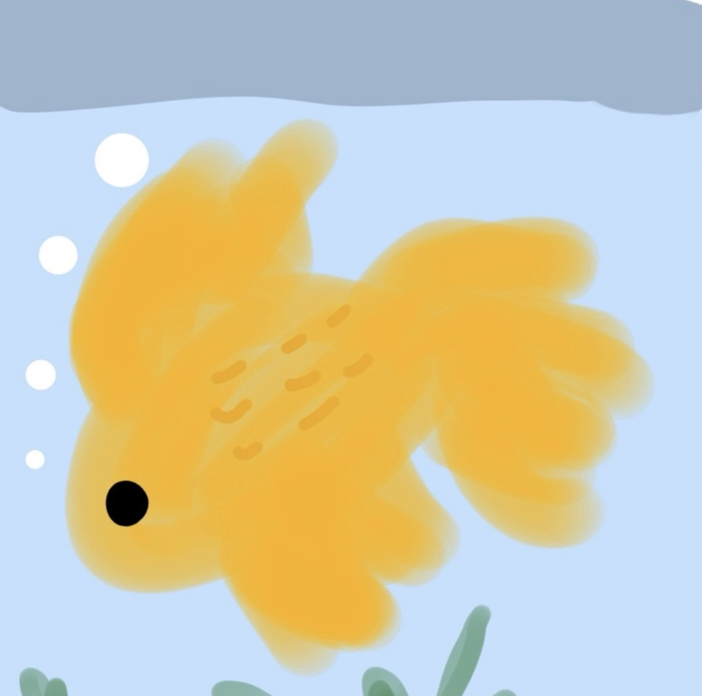

✨ CS Freshman
🚀 Open to Connect

🐠
🥟
💻
Coding & Leveling Up Everyday
📍
高雄市鼓山區 / 中山大學
✉️
miatai0409@gmail.com
Hosted via GitHub Pages
國立中山大學 資訊工程學系 一年級
Mia Tai (戴詩庭) ⚡
🏷️
綽號：
金魚 / 蛋餃 / 芋頭
🏫
高中：
臺北市立大同高級中學
🎂
生日：
2008 / 04 / 09
熱愛演算法與系統底層技術的資工系學生。從 Discrete Mathematics 的嚴謹證明到 C++ 的記憶體管理，樂於探究程式碼背後的底層運作邏輯，並朝著理想目標持續精進突破！
“
努力也好，孤獨也好，有時是得不到回報的；但是即使如此，我們也一直走到了今天。人們稱之為日子的，那就是我們的軌跡，也是奇蹟。
「努力も孤独も報われないことがある だけどね それでもね 今日まで歩いてきた 日々を人は呼ぶ それがね、軌跡だと」
🎵
—— Mrs. GREEN APPLE《僕のこと》
🎨 興趣與日常生活 (Interests & Lifestyle)
⚾
看棒球比賽
熱愛觀賞棒球比賽，享受現場熱血張力與球場氛圍
📸
攝影與紀錄
日常寫筆記、隨手拍照，捕捉生活點滴與靈感
🎧
音樂聆聽
2,159首 / 49,995分偏好 HoneyWorks 與 ミセカイ，從旋律與歌詞汲取人生啟發
🎮
動漫與遊戲
喜愛《文豪野犬》S4；沉浸原神、星穹鐵道、世界計畫、明日方舟等多款作品
#看棒球比賽
#攝影紀錄
#HoneyWorks
#ミセカイ
#文豪野犬
#原神
#星穹鐵道
#世界計畫
#明日方舟
#神魔之塔
Explore Mia's Orbit
✦ ✦ ✦
8+
C++ 專案數
120+
離散解題數
2,159
年收聽曲數
49,995m
年音樂時長
Academics
2026 - Present
CS Foundations & Core Math
深入研讀離散數學（計數、數學歸納法、數進位轉換）與微積分（極限、連續性證明），奠定紮實資工學術根基。
Projects
2026
C++ Modern Development
實作 C++ 函式重載、傳址呼叫機制、標準流對齊格式與專案 Makefile 自動化建構腳本。
Environment
Linux / Ubuntu
Dev Environment Setup 🛠️
熟悉 Ubuntu 虛擬機開發環境調校、Java 編譯器配置與系統除錯實務經驗。
Makefile • GCC • Git
Check setup log ⚙️